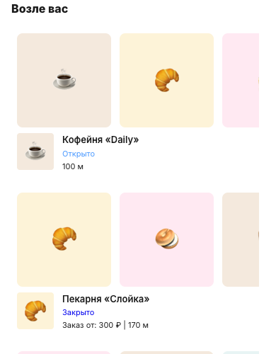
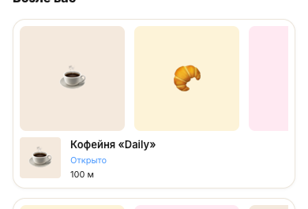
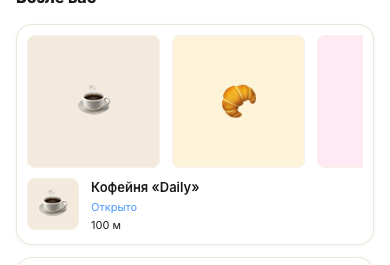
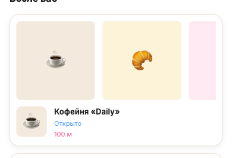

LOVII · витрина · карточки точек на главной
Разобрал CSS и отрендерил варианты. Проблема не только в обводке — у карточки нет ни рамки, ни тени, а фон почти совпадает со страницей.
Текущее правило .nearby-store: background: var(--background-normal-surface) (#f8f8f8) — без border и без box-shadow. Страница под ней почти белая (#fff), поэтому карточка «растворяется»: глаз не видит ни границы, ни объёма.
При этом все остальные карточки витрины (товар, наличие, заказ, список) построены по канону: белый фон --lv-card + рамка 1px solid --lv-line (тёплый нейтральный #ece5da) + мягкая тень 0 1px 3px rgba(26,26,26,.06) + радиус 16. Карточка точки выпала из канона — отсюда ощущение «не на месте».




| Вариант | Что добавляет | Риск |
|---|---|---|
| A | Возвращает карточку в канон: рамка, тень, белый фон. Минимально и безопасно. | низкий |
| B | A + внутренний порядок: фото-плитки и логотип получают тонкую рамку, растёт воздух. Карточка «читается» структурно. | низкий |
| C | B + брендовый акцент (тёплая подложка плиток, акцентная подпись). Живее, но чуть дальше от строгого канона. | средний |
Цвета — только из токенов (--lv-line, --lv-card, --lv-surface, --lv-pink). Ничего не изобретал.